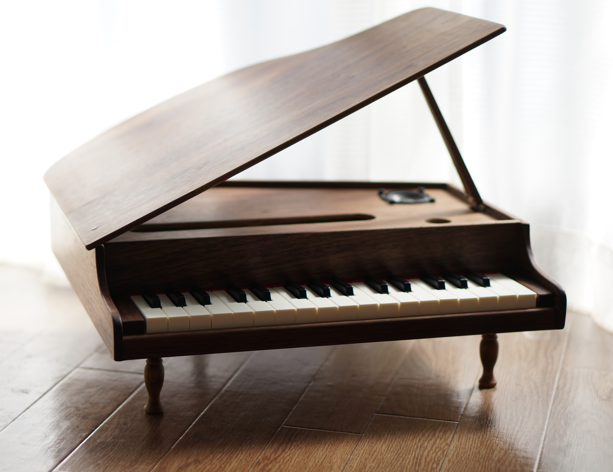

virtual toypiano  まるで普通のトイピアノの様にトイピアノの音が出る「物理モデリング音源搭載のトイピアノ」 特徴など フィジカルモデリング・トイピアノ音源搭載（パラメータとか一切変えられません…） 光センサを使用した新キースキャンユニット（試作版はゴムスイッチでグニャグニャ） 板をスライスするところから作ったウォルナットのケース（頑張って磨きました） 試作版から色々なところを変更したけど相変わらずノイズが多い… 動画 Works一覧へ